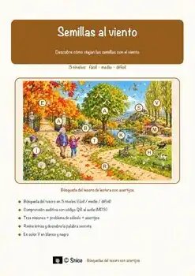
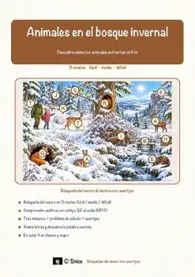
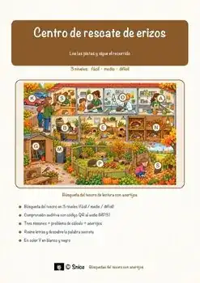
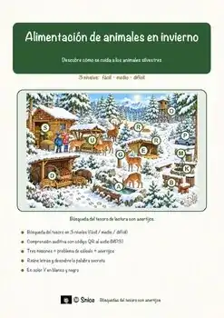
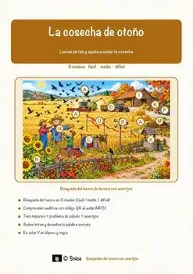
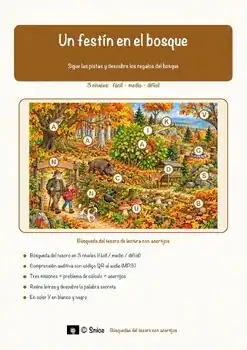
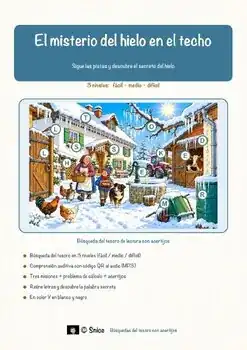
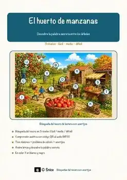
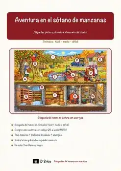

«Semillas al viento» – Búsqueda del tesoro de lectura
US$ 5.00Ver en TpT
Búsqueda del tesoro de lectura en español, al estilo escape room en papel: «Semillas al viento».
El alumnado lee una estación breve en español, encuentra la pista que lleva al siguiente lugar, reúne una letra en cada estación correcta y ordena las letras para descubrir la palabra secreta. Los callejones sin salida permiten que cada estudiante compruebe su propio trabajo.
23 páginas, con solucionario, con guía para el docente. Todo el material para el alumno está en español.
MateriaAnimales y naturaleza
GradosGrados 3–4
Tipo de recursoBúsqueda del tesoro
Páginas23
FormatoPDF
SolucionarioIncluido
Recursos similares

«Animales en el bosque invernal» – Búsqueda del tesoro de lectura

«Centro de rescate de erizos» – Búsqueda del tesoro de lectura

«Alimentación de animales en invierno» – Búsqueda del tesoro de lectura

«La cosecha de otoño» – Búsqueda del tesoro de lectura

«Un festín en el bosque» – Búsqueda del tesoro de lectura

«El misterio del hielo en el techo» – Búsqueda del tesoro de lectura

«El huerto de manzanas» – Búsqueda del tesoro de lectura
